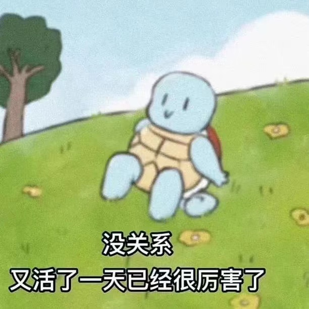
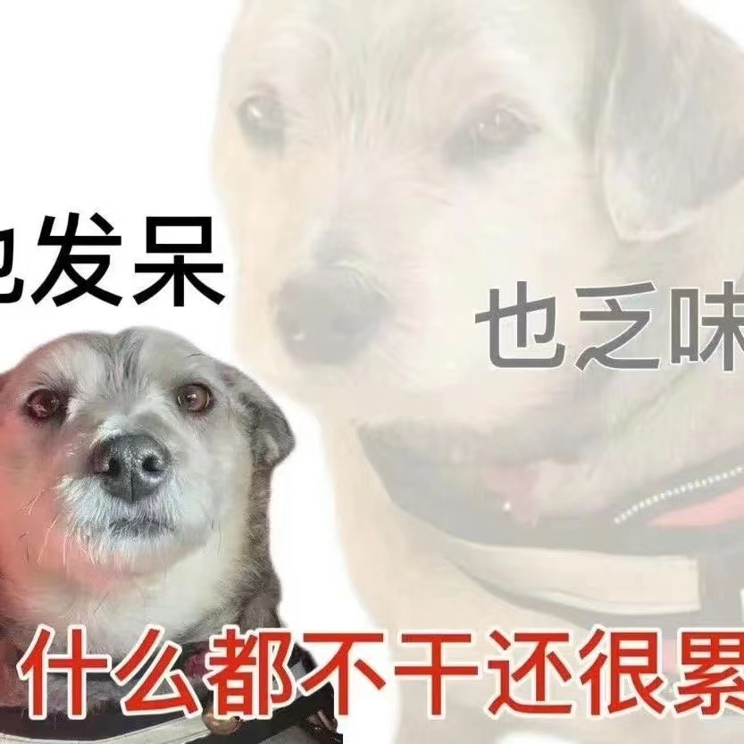
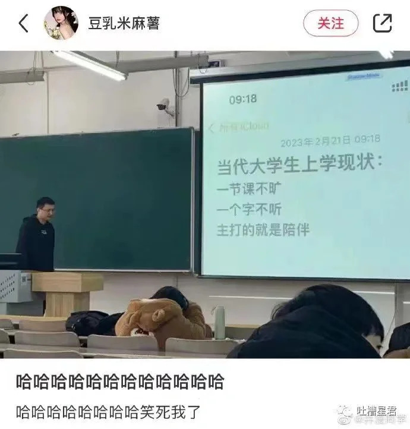
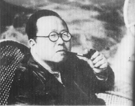

封面照片来自Niklas Hamann on Unsplash
我对大学课堂的抵抗性程度越来越高了。
其实，大家每天都蛮累的，不是吗？总是有声音在你的身边徘徊——两种一种声音，一种展演的声音，一种加速的声音。
“展演”下的我们如同木然的傀儡，在老旧的教材和反复的PPT念叨中保持沉默，逐渐走向戈夫曼说的”精神废弃”；“加速”下老师们学术指标的暗示与要求无处不在，我们眼前的道路已经提前被告知应当被提倡走向科研，与论文、比赛无关的事物难以激起人内心惬意而愉快的感受。
我们的情绪难以向周围的人展开，更多时候却愿意在互联网上酝酿成一片风暴。我时常听见身边的朋友说，“明明什么也没有做，却感觉很累”、“恭喜自己，又活过了一天”。这并非只是个别案例，网络热图的出现足以说明当下年轻人集体面临的部分精神状况。


我们现在是什么状况？似乎教育者没自上而下地反思，那就让我来自下而上地试着批判一下吧。
我是一个相信经验的人，从自己的具身经验出发，或许角度和论点会有所偏颇，但仍然值得一试。
被动的大学教育是对个人的废弃
现代公共教育为我们提供了十分丰富的学习内容。就我有限的观察而言，颇具讽刺意味的是即使在”双减”政策下，现在的小学生在家长眼里幸运地享受着舞蹈、书法、歌唱、语文、数学和英语等多类课程资源；同一门专业，教学大纲为大学生拓展出了种类繁多的选择，一门社会学专业下有定性的与定量的社会学研究方法、社会学理论、社会工作、社区概论、思想道德政治、博弈论等等。美其名曰是为通识教育，需要都有所涉猎、有所了解。这一点我是十分认同的，从”被推着走”的应试模式到需要自己主动探索的自主成长模式，大学其实在呼唤学生的主体性。
而我的困惑与思虑正在于，这份本应诞生的主体性似乎正在各种因素——“展演”、“加速”与倦怠——所压抑。
就大学教育而言，大学应该发生什么？我认为应该有两点：“知识”与”美德”。需要注明的是，真正的知识伴随着智慧，而智慧正是将知识与美德相互联系起来的桥梁。
知识是什么？简单理解，知识是我们将对社会与自然的认知经验加以总结与系统化的产物，我们今天说的科学（包括自然科学、社会科学与人文学科）正是知识最重要的载体，也是知识最具代表性和权威性的代理人。我们进入大学，最直接的目的往往是获取更深层次的知识，并用此加以理解世界，甚至改造世界。但在这个过程中，我们面临着最基本也常常被忽略的问题：我们与知识的关系。
第一层关系：知识如何发生
我们对眼前的知识有多少感情和执着？上完一门课便换下一门课，我们的知识，求知的情感，我们的兴趣，我们多少带有的志向能不能瞄准我们最情有独钟的事物？就像爱一个人一样，我们是在专情地爱一个人，还是平均地爱了不同的人？这是一个很重要的课题。我认为今天的大学生应该大胆一些，大学老师应该前卫一些。学生应当允许自己对某些课程的低兴趣和低价值感的困惑和迷茫存在，而不必自我攻伐；老师则应慷慨一些，不必强求学生必须在该课程上达到某个指标。我们对知识的发生往往会经历一个漫长而坎坷的过程，许多人甚至一生也难以实现（当然也有结构性因素的存在）。就好像工作一般，如果一个人能在自己认为有使命感、愿意投入巨大热情的工作中，他/她如何能不实现自己的价值？
产生这样的想法源于我对博弈论等课程的无感以及对自己产生更多进行自主选择的勇气的希望。我似乎产生了一些逆反心理，面对这类课堂时，心中不仅毫无兴趣，甚至抱有强烈反抗性的想法——我不能委身于此。一位自己也讲不明白博弈论公式的老师在讲台上照念PPT，学生们则一言不发，默默地在台下做着自己的事情，双方相互展演，每日循环往复，情绪的调动只能停留在互联网社交媒体上——想到这点是因为每次开读书会时，我的情绪会比以往时候都活跃，同时伴有强烈的自我价值感。如果打一个不恰当的比方，就好像大脑在不停分泌没有副作用的多巴胺——思考带来的愉悦是悠悠而绵长的，比之暴食、懒惰与色欲更加迷人。

我其实并不知道自己喜不喜欢社会学。但我想我很清楚，我也正在做着这几件事——读书、思考与写博客。读书更像是还在培养的习惯，但我喜欢读书之后思考，在博客网页上专注地写作，将自己混乱的想法组织好表达出来。为了这些，我可以熬夜捣鼓博客网站，甚至是在熬过漫长黑夜以后起来仍然迫不及待地打开。我期待着，期待着自己的博客网站上遍布自己思考的痕迹，由混乱到有序，由稚嫩到成熟。
我将这些理解为自我知识发生的过程。这样一件事情让我着迷，让我迫不及待地完成，让我感到我在为自己而活，我是主动的。如同前文所述，我认为我正在培养自我主体性的过程之中，大学本应具备这样的功能。而主体性往往会因为个体间的差异性而带来丰富的多样性。但我们今天看到的是什么？我们今天看到的更多是同质性。大家从入学开始赛道似乎就顺理成章地成为考研与考公，在庞大的学术体系面前早早就将自己的思考让渡了出去。前段时间，我在学院的公众号看到一个大二的学生，在学院的行政公众号上发了一篇名为《大一就学做科研》的文章——并不是咬定这位同学没有思考，也没有否定ta，只是我始终觉得大学最重要的功能还是”育人”与”启蒙”，但今天许多高校却竭力在学术竞争中卷出名次，这种范围蔓延下来，身边的同学有的确实很会写论文，跟着不少老师打了比赛，但有多少人静下心来阅读？有所少人具有批判性思考？大多数人最后只是在重复性地生产知识和话语，有的还要被卷入行政党建——我看到的中国学术界是这般模样，我所遇见过的已站在高位的学术大咖也如此承认过。如果是以前的我无疑会十分羡慕，但随着阅读、实践，我对学术的认知反而越来越多地走向”祛魅”的过程。这个过程消解的是我过去对学术的崇拜，同时带来的还有一阵”还有更多可能”的感受。
写下这些文字，我知道它们多少是冒进的和不成熟的。我也无法确认我此时的状态——我这种对一般课程都不上心的态度真的好吗？这里面有多少是出于我的惰性？我不得而知，但我很想很想，很想在这些时间里进行博客框架建设的探索和内容写作的锻炼。如前所述，我对知识有一个明确爱着的对象，它可以让我花上大量时间投入，让我绞尽脑汁地经营，而不是蜻蜓点水般万花丛中过。
大学四年是最为自由的时间，也是我们唤醒主体性最关键的时间，处理好要对哪个知识投入自己的”爱”这一课题是这一阶段对自己最大的负责。
第二层关系：知识将我们工具化了吗？
在中国，现代公共教育的目的是培养出具有高度”工具理性”——聚焦语言组织和表达能力，分类、计算的能力，以及对于各种因果关系的掌握的人。这些能力适用于我们执行各种各样的任务，进而达到我们的目的。
这种感受在大学尤为明显。无论是学术赛道里的竞争生态，还是重学术轻人伦的教育氛围，都在加剧”福特主义”。面对未来的不确定性，教育者与受教育者深陷于对既有道路的确定性追求。如同一整套适用于生产线上的大规模生产的管理模式，大学教育也愈加趋向”找老师——打比赛——做项目——写论文——升学”的既定模式。但这是创造还是生产？
用渠敬东老师的话来说，现在在教育体系中学到的东西大多是重复的，虽然写了大量的论文，但其实也没什么用。大学似乎给我们讲了一大堆关于自然、社会与生活的学问，但实际情况是大多数学生一遇到生活就胆怯、不敢面对，如同潘光旦先生指出的大学教育是”童子操刀”式的。而明白人有伦有节，懂得与不同的人（例如老师和同学）交往的道理在哪里，处理不同事情的分寸是十分重要的。

大学课堂十分安静，没有人表述自己，似乎都因为别的同学在而不敢出声表达。在涉及到升学入党等相关利益时，还滋生出一系列足以污染人心的事件，有的甚至还存在学院行政力量的参与。那么，现在的大学生态究竟是什么状况？
“我觉得现在教育最大的问题是，我们学到的东西越多，就越抹杀身边的人，以为他们没有价值，不会给你提供任何东西，只是你的竞争对象，这是最可怕的世界。其实我们学习所有的东西都要从身边人开始，尤其中国人讲’修身齐家’，也是从身边人开始的。而我们的知识从某种意义上是遮蔽性的，认为身边的东西无意义，不具有知识性，这是一个大的误解。”
仍然是渠敬东老师讲到的现象，这正是人工具化的进程与表现。颇具讽刺意味的是我正是这样的人，在学习的道路上不自觉与身边他人疏远，每当竞争的可能出现时都会心中一紧。悲哀的是我已经习惯于这样的”备战”状态。
我一直记得大一的第一节社会学导论课上，老师给我们放了一段哈佛公开课的视频，从电车事件来讨论何为正义。
其实在西方，大学对于美德的重视是更强的。诸如”公平”、“正义”和”自由”等概念常常从一些生活事件中得到讨论。基于我对国内大学的感受，教育并非是要启蒙我们何谓美德，反而想灌输给我们一套宏大的价值观与理念，形形色色的活动最后都指向繁杂的形式主义，一定程度上换来了对庞大系统的忠诚，但在微观生活世界里，在附近，我们对生活本身，对他人确实钝感的。我们身边有多少人对发生在远方的事件不是冷漠就是情绪化呢？即使是饱和官方意识浸润的个体，面对事件往往也是相似、统一的话语。冷漠的人把知识看作工具，为自己围起了隔绝于世的高墙；情绪化的人将平日积攒的情绪宣泄在网络上。有几个人是带着独立的、批判性的角度维护知识的美德？